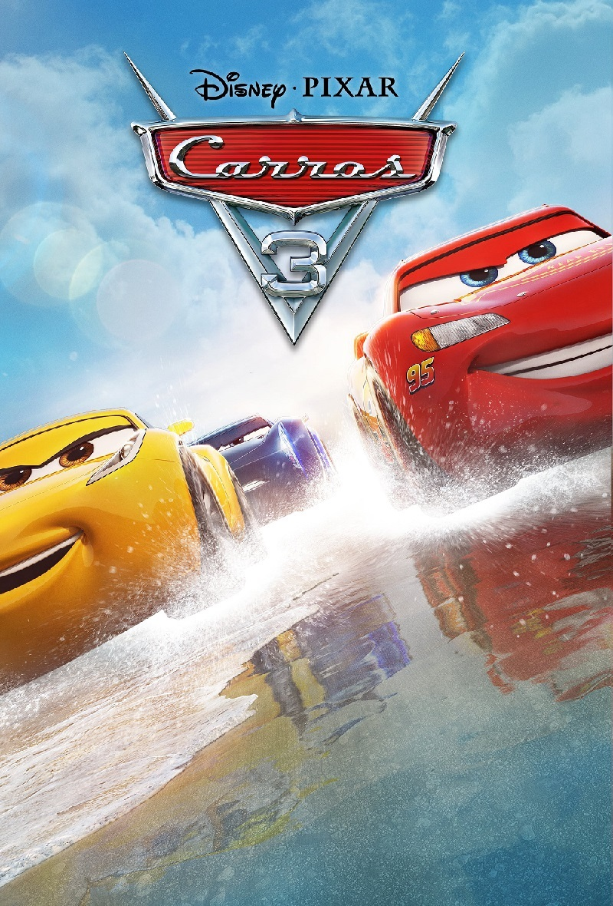

Carros 1
O filme segue a jornada de Relâmpago McQueen, um carro de corrida novato, talentoso e muito exibido, que só se importa em vencer a Copa Pistão.
A caminho da corrida final na Califórnia, ele se perde da sua equipe e acaba acidentalmente em uma cidade esquecida no deserto chamada Radiator
Springs.
Lá, ele causa um estrago e é obrigado a ficar na cidade para consertar os danos. Enquanto trabalha, ele conhece os moradores peculiares
da cidade,como o leal e divertido caminhão de reboque Mate, a advogada e ex-carro de cidade grande Sally Carrera e o ranzinza médico da cidade Doc
Hudson, que esconde um grande segredo.
No começo, Relâmpago só quer escapar e voltar para a sua vida de glamour, mas, aos poucos, ele aprende a
apreciar a vida em Radiator Springs e o valor da amizade. Ele percebe que há coisas mais importantes do que apenas vencer uma corrida.
No final,
quando ele tem a chance de vencer a Copa Pistão, Relâmpago faz uma escolha que mostra o quanto ele mudou. Ele abre mão da vitória para ajudar
um piloto acidentado, mostrando que o respeito e a amizade valem mais do que qualquer troféu. Ele decide que Radiator Springs é seu
verdadeiro lar e monta sua equipe de corrida lá.

Carros 2
Carros 2 leva Relâmpago McQueen a uma grande aventura internacional, onde ele participa do Primeiro Grande Prêmio Mundial. A corrida, que
acontece em diversos países, promove um novo tipo de combustível ecológico.
A trama ganha um toque de espionagem quando o amigo
de McQueen, a caminhonete Mate, é confundido com um espião. Ele acaba se unindo a dois agentes britânicos, Finn McMissil e Holley
Caixote de Rodas ,para investigar um plano que visa sabotar o evento e desmoralizar o novo combustível. A conspiração é liderada por
um grupo de "carros-limão", veículos antigos e com defeitos, que se sentem menosprezados e querem manter a supremacia do petróleo.
Mate, com sua simplicidade e perspicácia, se torna o herói improvável. Ele desvenda o mistério e, em um momento crucial, salva McQueen
e o futuro da competição. No final, o filme celebra a amizade verdadeira, mostrando que a lealdade e a autenticidade de Mate são
suas maiores qualidades.

Carros 3
Relâmpago McQueen, o lendário campeão da Copa Pistão, está no topo de sua carreira. Porém, uma nova geração de corredores de alta tecnologia, liderada
por Jackson Storm, começa a surgir, fazendo com que Relâmpago se sinta cada vez mais ultrapassado.
Em uma corrida decisiva, ele tenta forçar
o ritmo para acompanhar Storm e sofre um grave acidente, ficando de lado por um tempo para se recuperar e repensar seu futuro.
Determinado
a voltar, Relâmpago procura ajuda na nova equipe de seu patrocinador, a Rust-eze. Ele conhece Cruz Ramirez, uma jovem e vibrante treinadora que
sonha em ser corredora, mas se limita a ser instrutora. No começo, Relâmpago e Cruz se estranham: ele se frustra com os métodos modernos dela e com o
fato de estar treinando, e não correndo; e ela se sente desvalorizada.
Juntos, eles partem em uma jornada de treino em diferentes locais, incluindo a antiga
pista de corrida de seu mentor, Doc Hudson. Aos poucos, Relâmpago e Cruz desenvolvem um forte laço de amizade. Ele aprende que não pode
simplesmente ignorar a nova tecnologia e precisa se adaptar, enquanto ela, inspirada por ele, começa a acreditar em seu próprio potencial como
corredora.
No final, durante a última e decisiva corrida da temporada, Relâmpago percebe que Cruz é quem realmente deve estar na pista. Ele, então, a
encoraja a correr em seu lugar, agindo como seu chefe de equipe. Com a ajuda dos conselhos de Relâmpago, Cruz consegue ultrapassar Storm e vence
a corrida, realizando seu sonho.